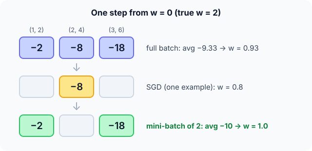

Prerequisites
- Gradient descent.
- Averages of numbers.
- MSE loss.
The analogy
Everyday analogy
Asking every voter in the country before each decision is accurate but painfully slow. Asking one random person is fast but noisy. Polling a few hundred people is fast and accurate enough.
Full-batch, stochastic and mini-batch gradient descent make exactly that trade-off when estimating which way is downhill.
How it works
Per-example loss: $L_i = \tfrac12 (w x_i - y_i)^2$, so its gradient is $g_i = (w x_i - y_i)\,x_i$. A batch gradient is the average of $g_i$ over the batch.
Start with one step, three ways
Points (1, 2), (2, 4), (3, 6); $w = 0$; $\eta = 0.1$. At $w = 0$, each gradient is $g_i = -y_i x_i$. Predict, then open "Check".
Example: predict before you read
Step 1. Compute the three per-example gradients.
Check
$g_1 = -2$, $g_2 = -8$, $g_3 = -18$.
Step 2. Cover the next line and guess: full-batch step (average of all three).
Check
Average $= -28/3 \approx -9.33$, so $w = 0 + 0.1 \cdot 9.33 \approx 0.93$.
Step 3. SGD with point (2, 4), and a mini-batch {(1, 2), (3, 6)}. Predict both new $w$.
Check
SGD: $w = 0.8$. Mini-batch: average $(-2 - 18)/2 = -10$, so $w = 1.0$. All move towards the true $w = 2$, by different amounts.

Quick recall: Before reading further, cover the text above and say out loud: what is the difference between SGD and full-batch gradient descent?
Check your answer
SGD estimates the gradient from one (random) example per step; full-batch uses the average over all training examples.
Finish the picture: one epoch of SGD
Process all three points once in the order (1, 2), (2, 4), (3, 6), updating after each.
- After (1, 2), then after (2, 4). Predict $w$.
Check
After (1, 2): $g = -2$, $w = 0.2$. After (2, 4): $g = (0.4 - 4) \cdot 2 = -7.2$, $w = 0.92$.
- After (3, 6). Predict $w$ and compare with one full-batch step.
Check
$g = (2.76 - 6) \cdot 3 = -9.72$, $w = 1.892$. One epoch of SGD made 3 updates and got much closer to 2 than one full-batch step (0.93).
Quick recall: Without scrolling up, say out loud: how many updates happen in one epoch of 1,000 examples with batch size 50?
Check your answer
20 updates (one per mini-batch).
Full worked calculation
One epoch over the three points (1, 2), (2, 4), (3, 6) with the model $\hat y = wx$, loss $\tfrac12(wx - y)^2$, learning rate 0.1, starting at $w = 0$ (the best value is $w = 2$). We compare full-batch, one-point SGD, and mini-batches of 2.
| Method | Updates in one epoch | $w$ after the epoch | Mean loss after |
|---|---|---|---|
| Full batch | 1 | 0.933 | 2.655 |
| Mini-batch (size 2, then 1) | 2 | 1.4 | 0.840 |
| SGD (size 1) | 3 | 1.892 | 0.027 |
-
1Gradient for one point
$$\frac{\partial}{\partial w}\tfrac12(wx - y)^2 = (wx - y)\,x$$Prediction error times the input. At $w = 0$ the point (3, 6) gives $(0 - 6) \cdot 3 = -18$, the point (1, 2) only $-2$.
-
2Full batch: average all three
$$g = \frac{-2 - 8 - 18}{3} = -9.333, \qquad w = 0 + 0.1 \cdot 9.333 = 0.933$$One careful, exact step per epoch. It used all the data, but it only moved $w$ once.
-
3SGD: first point (2, 4)
$$g = (0 \cdot 2 - 4) \cdot 2 = -8, \qquad w = 0 + 0.8 = 0.8$$One point gives a noisy estimate of the full gradient (−8 instead of −9.33), but we can act on it immediately.
-
4SGD: second point (1, 2)
$$g = (0.8 \cdot 1 - 2) \cdot 1 = -1.2, \qquad w = 0.8 + 0.12 = 0.92$$This point has a small input, so its gradient is small and the step is tiny. Different points pull with different strength.
-
5SGD: third point (3, 6)
$$g = (0.92 \cdot 3 - 6) \cdot 3 = -9.72, \qquad w = 0.92 + 0.972 = 1.892$$After one pass SGD is at 1.892, much closer to 2 than full batch (0.933), because it made three updates instead of one.
-
6Mini-batches of 2: {(1, 2), (3, 6)} then {(2, 4)}
$$g_1 = \frac{-2 - 18}{2} = -10 \Rightarrow w = 1.0, \qquad g_2 = (1.0 \cdot 2 - 4) \cdot 2 = -4 \Rightarrow w = 1.4$$A compromise: less noise than single points, more updates than full batch, and each batch is a matrix product a GPU computes efficiently.
-
7Compare the losses
$$L(w) = \tfrac13 \sum \tfrac12 (w x_i - y_i)^2: \quad L(0) = 9.33, \; L(0.933) = 2.66, \; L(1.4) = 0.84, \; L(1.892) = 0.027$$Same data, same learning rate, same amount of computation, very different progress. On big datasets this difference is why everybody uses mini-batch SGD.
What the numbers tell us
More, noisier updates beat fewer, exact ones: after one epoch SGD reached $w = 1.89$, mini-batch 1.4, full batch 0.93.
The noise is not all bad: it can shake the weights out of poor regions. Usual batch sizes are 32–256, and the data is shuffled every epoch.
The rule in plain words
Shuffle the training set each epoch and split it into mini-batches (from 1 example, pure SGD, up to a few thousand).
For each mini-batch: average the gradients of its examples and take one step $w \leftarrow w - \eta \bar g$.
Quick recall: Before you read the code, describe one SGD epoch, in your own words. Then check below.
Check your answer
Shuffle the examples, then for each one compute its gradient at the current $w$ and immediately update $w$.
The code
Read this code after you have done the three steps by hand. It will make more sense.
double batch_grad(double x[], double y[], int idx[], int m, double w) { /* average over a batch */
double g = 0;
for (int k = 0; k < m; k++) {
int i = idx[k];
g += (w * x[i] - y[i]) * x[i]; /* gradient of 1/2 (wx - y)^2 */
}
return g / m;
}
double sgd_step(double x[], double y[], int idx[], int m, double w, double lr) {
return w - lr * batch_grad(x, y, idx, m, w);
}Definition
What you just did, in one line: stochastic gradient descent updates the parameters using the gradient of one example (or a small random mini-batch) at a time, instead of the whole training set.
flowchart TD
A["shuffle the training set"] --> B["take the next mini-batch"]
B --> C["average the gradients of its examples"]
C --> D["w = w - learning rate × average"]
D --> E{"more batches this epoch?"}
E -->|yes| B
E -->|no| F{"more epochs?"}
F -->|yes| A
F -->|no| G["done"]
How costly is it?
Quick recall: Before looking at the formula, predict: what does a larger batch do to the noise in the gradient estimate?
Check your answer
It reduces it: averaging more examples gives an estimate closer to the true gradient.
A mini-batch $B$ estimates the full gradient by averaging; its noise shrinks with the batch size $m$:
$$\bar g_B = \frac{1}{m}\sum_{i \in B} \nabla L_i(w) \approx \frac{1}{n}\sum_{i=1}^{n} \nabla L_i(w), \qquad \text{noise (std)} \propto \frac{1}{\sqrt m}$$| Variant | Examples per step | Cost per step | Noise |
|---|---|---|---|
| Full batch | $n$ | $O(n)$ | None |
| SGD | 1 | $O(1)$ | High |
| Mini-batch | $m$ (e.g. 32–512) | $O(m)$, parallel on a GPU | Moderate |
| Updates per epoch | — | $n / m$ | — |
Warning
Don't feed examples in a fixed order (e.g. all cats, then all dogs). Without shuffling, consecutive gradients are biased in one direction and training oscillates or stalls.
Exam tip
Know the vocabulary: an epoch is one pass over the data, an iteration is one update, and iterations per epoch $= n / m$.
Common mistakes
- Confusing epochs with iterations.
- Summing instead of averaging the batch gradients, so the effective learning rate changes with the batch size.
- Increasing the batch size without adjusting the learning rate.
Try it yourself
Exercise 1 (warm-up)
50,000 training images, batch size 100, 10 epochs: how many weight updates?
Hint
Updates per epoch = $n/m$.
Answer
$500 \times 10 = 5{,}000$ updates.
Exercise 2 (a bit harder)
From $w = 1$, compute the full-batch step and the SGD step on point (3, 6), with $\eta = 0.1$. Write your answer down before you open it.
Show answer
Gradients at $w = 1$: $(1 - 2) \cdot 1 = -1$, $(2 - 4) \cdot 2 = -4$, $(3 - 6) \cdot 3 = -9$. Full batch: average $-14/3$, $w \approx 1.47$. SGD on (3, 6): $w = 1 + 0.9 = 1.9$.
Did you know?
Did you know?
Robbins and Monro introduced stochastic approximation, the theory behind SGD, in 1951.
Mini-batch sizes are usually powers of two (32, 64, 128…) because they map neatly onto GPU memory and parallel hardware.
Key points to remember
If you remember one thing from each line, remember the because.
- SGD is cheap per step because it uses only a few examples to estimate the gradient.
- Mini-batch gradients are noisy because a small sample doesn't represent the whole dataset exactly.
- Larger batches are less noisy because averaging more examples reduces variance.
- Shuffling matters because ordered data biases consecutive updates.
- Many cheap steps beat few exact ones because progress depends more on the number of updates than on their precision.
Self-check questions
Answer these in order, out loud. They follow the page, so your answers become the script of your video.
- How are full-batch, SGD and mini-batch like polling voters?
Sample answer
Asking everyone is exact but slow, one person is fast but noisy, and a few hundred is fast and accurate enough.
- From $w = 0$ with $\eta = 0.1$, compute the full-batch, SGD (point (2, 4)) and mini-batch ({(1, 2), (3, 6)}) steps.
Sample answer
Full batch: $w \approx 0.93$. SGD: $w = 0.8$. Mini-batch: $w = 1.0$.
- Why does
batch_graddivide bym?A good answer mentions the learning rate.
Sample answer
Averaging keeps the gradient's scale independent of the batch size, so the same learning rate works whatever $m$ is.
- So what is SGD with mini-batches, in one sentence?
Sample answer
Gradient descent where each update uses the average gradient of a small random batch of examples instead of the whole dataset.
- Why did one epoch of SGD get closer to the answer than one full-batch step?
A good answer counts updates.
Sample answer
SGD made three updates in that epoch, each using the latest $w$, while full-batch made only one.
- How many updates per epoch, and what does each step cost?
Sample answer
$n/m$ updates per epoch, each costing $O(m)$ gradient computations.
- Why must the data be shuffled each epoch?
Sample answer
Otherwise consecutive batches come from similar examples and push the weights in biased directions.
- If you had to teach this to a friend in 2 minutes, what would you leave out, and why?
Sample answer
I'd leave out the $1/\sqrt{m}$ noise formula. I'd keep the polling analogy, the three one-step results from $w = 0$, and "small random batches, many cheap noisy steps, shuffle every epoch".
External resources
- PyTorch docs: torch.optim.SGD: SGD with optional momentum.
- Wikipedia: Stochastic gradient descent: variants and history.
- Google ML Crash Course: Batch size: batch size, epochs and learning rate.
Videos
- YouTube search: StatQuest SGD: StatQuest's clear explanation.